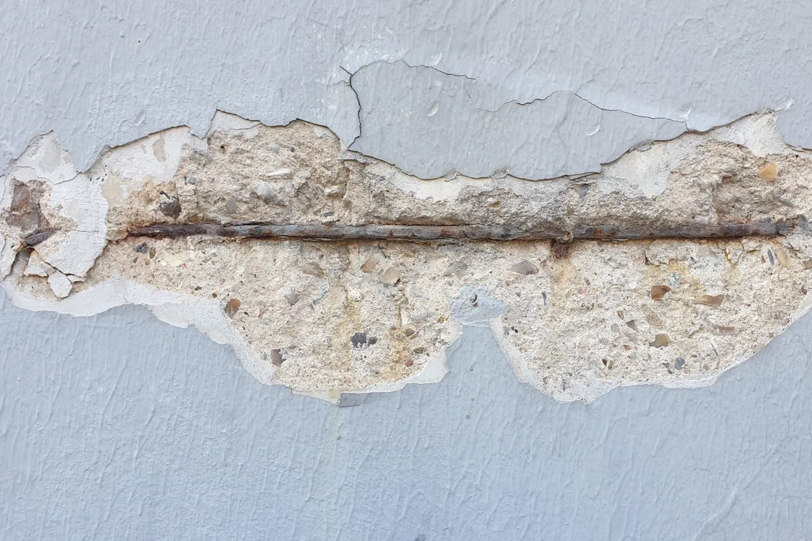
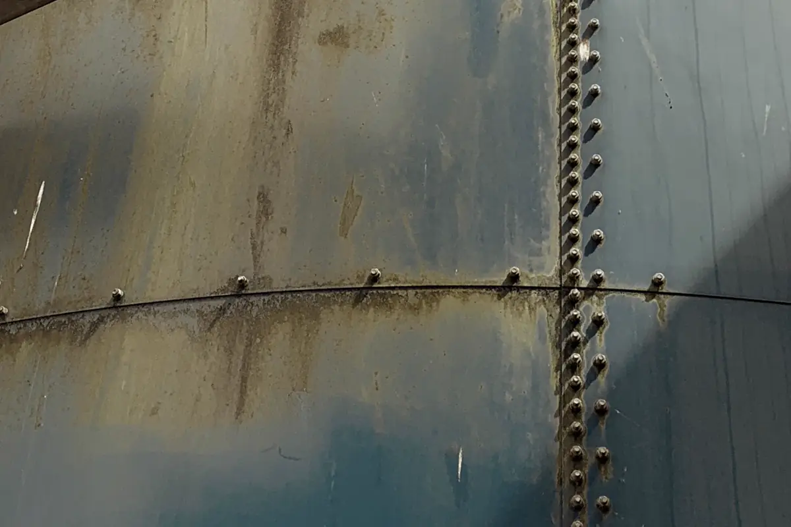
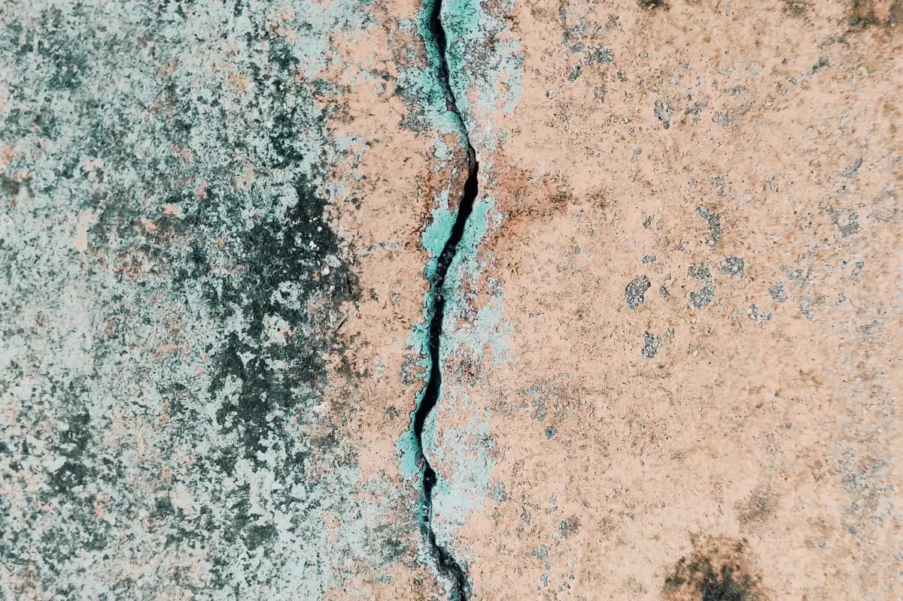

Tratar sintoma sem diagnóstico é gastar duas vezes
A cena é conhecida: mancha na viga, concreto destacado, ferragem à vista. Alguém raspa, aplica argamassa por cima e pinta. Seis meses depois o mesmo ponto abre de novo, um pouco maior. O reparo falhou porque tratou a aparência, não o mecanismo.
Patologia estrutural é investigação. Antes de definir a intervenção é preciso saber qual mecanismo está agindo — carbonatação, cloreto, umidade permanente, movimentação estrutural, sobrecarga, falha de execução — e quanto de seção resistente já foi perdido. É isso que separa um reparo que dura décadas de um que dura um verão.
Na Grande Vitória, com faixa litorânea extensa e atmosfera industrial em vários pontos, o mecanismo dominante costuma ser a corrosão por cloretos. Ela ataca em pontos, avança rápido e frequentemente já corroeu bastante antes de aparecer na superfície.
Como conduzimos o diagnóstico
Inspeção visual e mapeamento
Percurso completo da estrutura com registro fotográfico, mapeamento de fissuras com abertura medida, teste de percussão e identificação dos pontos críticos.
Plano de ensaios
Definição dos ensaios que respondem à hipótese levantada — carbonatação, cloretos, potencial de corrosão, esclerometria, pacometria, ultrassom, testemunho.
Análise e verificação
Quantificação da perda de seção, recálculo da capacidade resistente com a geometria remanescente e classificação do risco por elemento.
Laudo e projeto de recuperação
Laudo com conclusão objetiva e projeto de recuperação: sequência, materiais, escoramento, critério de aceitação e ART registrada.

Patologias em concreto armado
Corrosão de armadura
Manifesta-se como fissura acompanhando a barra, destacamento do cobrimento e ferragem exposta. Causas: cobrimento insuficiente, concreto poroso, carbonatação avançada ou contaminação por cloretos. A recuperação exige remoção de todo o concreto deteriorado — inclusive atrás da barra —, limpeza mecânica do aço, passivação e reconstituição com argamassa de reparo, restabelecendo o cobrimento de projeto.
Fissuras e trincas
Nem toda fissura é estrutural, mas nenhuma deve ser fechada antes de saber se está ativa. Monitoramos com selo testemunho ou fissurômetro por um período antes de definir o tratamento: fissura estabilizada aceita selagem rígida; fissura ativa exige tratamento flexível e, muitas vezes, correção da causa que a movimenta.
Infiltração e lixiviação
Água percolando por laje, marquise, floreira e junta carrega o hidróxido de cálcio do concreto, deixa eflorescência e estalactites, e mantém a armadura permanentemente úmida. Sem impermeabilização corrigida, qualquer reparo é temporário — assunto tratado também em recuperação de fachadas.
Deformação excessiva e sobrecarga
Laje ou viga com flecha visível, revestimento trincando em faixa, porta emperrando. Pode ser deformação lenta do concreto, mas também pode ser carregamento acima do previsto — o caso clássico é o galpão ou a laje que recebeu equipamento novo sem verificação. A verificação e o reforço estão descritos em projeto estrutural.

Patologias em estrutura metálica
Corrosão atmosférica e perda de espessura
Em ambiente de maresia, a perda de seção em perfis, terças, chapas de ligação e telhas é o problema número um. Medimos a espessura remanescente por ultrassom e comparamos com a espessura de projeto para saber se a peça ainda atende. Corrosão em frestas, atrás de chapa de ligação e em região de acúmulo de água é a mais perigosa, porque avança escondida.
Ligações e soldas
Parafuso corroído ou frouxo, furo alongado, solda com trinca ou com corrosão preferencial. A inspeção usa ensaios não destrutivos conforme o caso — detalhados em ensaios não destrutivos.
Falha da proteção anticorrosiva
Pintura descascando em placas, empolamento, ferrugem sob a película. Quase sempre resultado de preparo de superfície insuficiente na aplicação original. A solução é especificar o esquema correto para a categoria de corrosividade do local, exigir o grau de preparo de superfície e medir a espessura de película seca aplicada, não confiar na palavra do aplicador.

Ensaios que utilizamos
| Ensaio | O que responde |
|---|---|
| Esclerometria | Estimativa da resistência superficial do concreto e comparação entre regiões |
| Pacometria | Posição das barras e cobrimento real da armadura |
| Ultrassom em concreto | Homogeneidade, vazios e falhas internas |
| Fenolftaleína | Profundidade da frente de carbonatação |
| Teor de cloretos | Grau de contaminação por cloreto em profundidade |
| Potencial de corrosão | Probabilidade de corrosão ativa na armadura |
| Extração de testemunho | Resistência real do concreto em laboratório |
| Ultrassom em aço | Espessura remanescente de perfil, chapa e tubo |
| Líquido penetrante e partículas magnéticas | Descontinuidade superficial em solda e peça metálica |
| Medição de película seca | Espessura efetiva da proteção anticorrosiva aplicada |
Tratamento e proteção
- Recuperação de concreto: remoção do material deteriorado, limpeza e passivação da armadura, reconstituição com argamassa de reparo e restabelecimento do cobrimento;
- Reforço estrutural: chapa colada, fibra de carbono, encamisamento, protensão externa ou substituição de elemento, conforme o cálculo;
- Proteção de superfície: pintura anticorrosiva com preparo de superfície especificado, hidrofugante e barreira contra cloretos e carbonatação;
- Impermeabilização: correção da origem da água, que é a condição para qualquer reparo durar;
- Substituição de peça metálica quando a perda de seção passou do limite aceitável;
- Plano de inspeção periódica, para acompanhar o que foi tratado e o que ficou em observação.
Perguntas frequentes sobre patologias e corrosão
Por que a armadura do concreto enferruja perto do mar?
O concreto sadio protege o aço por ser alcalino: essa alcalinidade forma uma película passiva na superfície da armadura. Dois processos destroem essa proteção. A carbonatação, em que o gás carbônico do ar reage com o concreto e reduz o pH ao longo do tempo, avançando da superfície para dentro. E a penetração de cloretos, o cloreto de sódio trazido pela maresia, que quebra a película passiva localmente mesmo com o pH ainda alto. Na orla da Grande Vitória o mecanismo dominante costuma ser o cloreto — e ele é mais agressivo, porque ataca em pontos e produz corrosão por pite.
Toda trinca em parede é problema estrutural?
Não. Boa parte das fissuras é de retração de argamassa ou de revestimento e é superficial. O que diferencia é o padrão, a abertura e o comportamento no tempo. Fissura mapeada e fina em toda a superfície costuma ser retração. Trinca diagonal partindo de canto de abertura, trinca com deslocamento entre os lados, trinca que atravessa elemento estrutural ou que aumenta ao longo dos meses precisa de investigação. Por isso instalamos selo testemunho ou fissurômetro e monitoramos: só depois de saber se a fissura está ativa faz sentido definir o tratamento.
Quais ensaios são usados no diagnóstico?
Depende do que se quer responder. Esclerometria estima a resistência superficial do concreto; pacometria localiza a armadura e mede o cobrimento; ultrassom avalia a homogeneidade e detecta vazios; aspersão de fenolftaleína mede a profundidade de carbonatação; ensaio de teor de cloretos quantifica a contaminação; potencial de corrosão indica a probabilidade de haver corrosão ativa; extração de testemunho dá a resistência real. Em estrutura metálica, a medição de espessura remanescente por ultrassom e a inspeção de solda dizem quanto de seção foi perdido. O plano de ensaios é definido pela hipótese que se quer confirmar, não por catálogo.
Dá para só pintar por cima da ferrugem?
Não, e essa é a tentativa mais cara que existe. Pintura sobre carepa de laminação, ferrugem solta ou sal não adere e falha em pouco tempo, e o processo corrosivo continua embaixo, agora escondido. Em estrutura metálica, o resultado depende do preparo de superfície: jateamento ao grau especificado, tinta compatível, espessura de película controlada e medição do que foi aplicado. Em concreto, é obrigatório remover todo o concreto solto, limpar e passivar a armadura e reconstituir com argamassa de reparo — o cobrimento tem que voltar.
Qual a diferença entre laudo de patologia e projeto de recuperação?
O laudo diz o que existe, por que existe e qual a gravidade. O projeto de recuperação diz o que fazer: onde intervir, com qual material, em qual sequência, com quais cuidados de escoramento e com qual critério de aceitação. Obra de recuperação executada só com base no laudo, sem projeto, costuma tratar sintoma e deixar a causa — e o problema volta no mesmo lugar.
Patologia estrutural na Grande Vitória
Inspeção e diagnóstico em edifícios, galpões e estruturas industriais da região:
Ferragem aparecendo ou trinca crescendo?
Mande fotos e o histórico do problema. Retornamos com o escopo de inspeção e o plano de ensaios.